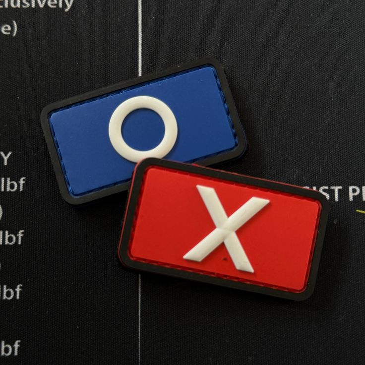
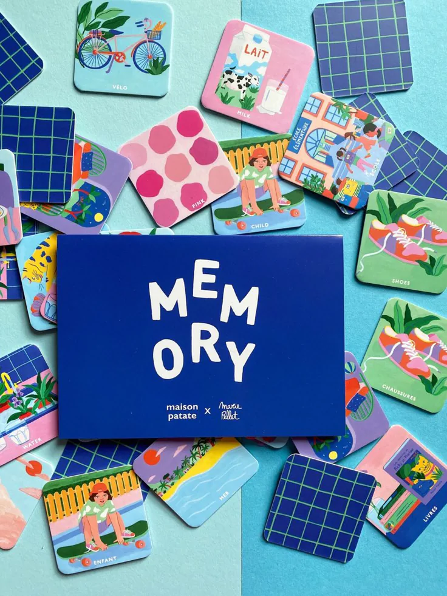

About Me
Hi, I'm Monu Prajapat
Sr. Full Stack Engineer
India
Experience
-
Sr. Full Stack Engineer
Apr 2024 – Present
Eminence Technology
-
Full Stack Engineer
Mar 2022 – Apr 2024
FarmHeal
-
Research Intern
Aug 2021 – Mar 2022
Samsung R&D Institute

